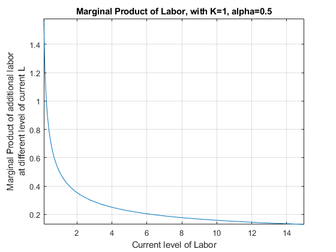
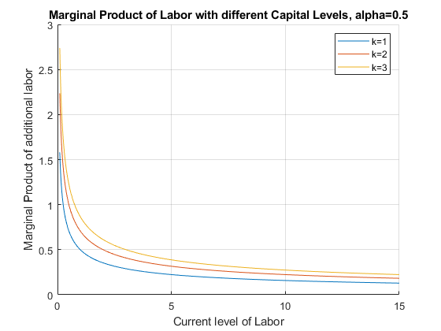
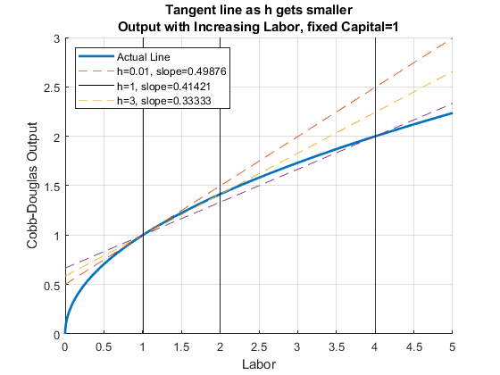
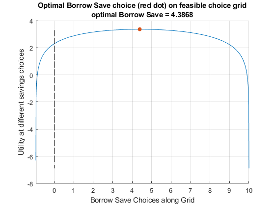
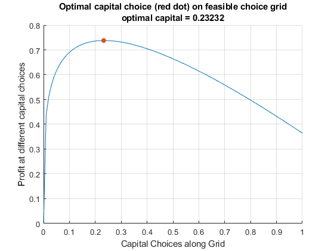
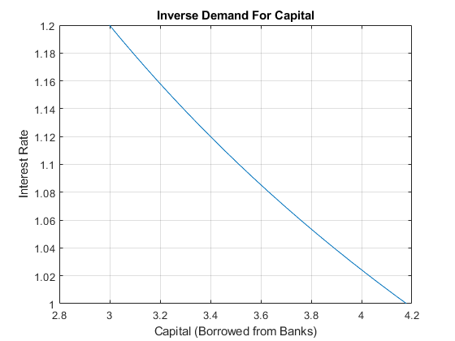
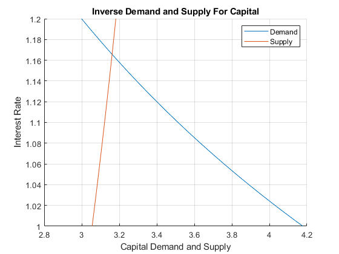

Chapter 4 Univariate Applications
4.1 Marginal Product of Labor
Go back to fan’s CodeDynaAsset Package, Matlab Code Examples Repository (bookdown site), or Math for Econ with Matlab Repository (bookdown site).
4.1.1 Marginal Product of Additional Workers (Discrete Workers)
Suppose we can not hire fractions of workers, but have to hire 1, 2, 3, etc.. What is the marginal product of each additional worker?
% fixed capital level
K = 1;
% current labor level
L = [1,2,3,4,5,6,7,8,9,10];
% Cobb Douglas Production Parameters
alpha = 0.5;
beta = 1-alpha;
% Output at x0
fx0 = (K^alpha)*(L.^beta);
% a vector of h
h = 1;
% output at fx0plush
x0plush = L+h;
fx0plush = (K^alpha)*((x0plush).^beta);
% derivatie
outputIncrease = (fx0plush - fx0)./h;
% Show Results in table
T = table(L', x0plush', fx0plush', outputIncrease');
T.Properties.VariableNames = {'L', 'x0plush', 'fx0plush', 'outputIncrease'};
disp(T);
L x0plush fx0plush outputIncrease
__ _______ ________ ______________
1 2 1.4142 0.41421
2 3 1.7321 0.31784
3 4 2 0.26795
4 5 2.2361 0.23607
5 6 2.4495 0.21342
6 7 2.6458 0.19626
7 8 2.8284 0.18268
8 9 3 0.17157
9 10 3.1623 0.16228
10 11 3.3166 0.15435
% Graph
close all;
figure();
hold on;
plot(L, outputIncrease);
scatter(L, outputIncrease,'filled');
grid on;
ylabel('Marginal Output Increase from each Additional Worker (h=1)')
xlabel('L, previous/existing number of workers')
title('Discrete Labor Unit, Marginal Product of Each Worker')
4.1.2 Using Derivative to approximate Increase in Output from More Workers
We know the MPL formula, so we can evaluate MPL at the vetor of L
% fixed capital level
K = 1;
% current labor level
L = [1,2,3,4,5,6,7,8,9,10];
% Cobb Douglas Production Parameters
alpha = 0.5;
% Output at x0
fprimeX0 = (1-alpha)*(K^alpha)*(L.^(-alpha));
T = table(L', outputIncrease', fprimeX0');
T.Properties.VariableNames = {'L', 'outputIncrease','fprimeX0'};
disp(T);
L outputIncrease fprimeX0
__ ______________ ________
1 0.41421 0.5
2 0.31784 0.35355
3 0.26795 0.28868
4 0.23607 0.25
5 0.21342 0.22361
6 0.19626 0.20412
7 0.18268 0.18898
8 0.17157 0.17678
9 0.16228 0.16667
10 0.15435 0.15811 4.1.3 Marginal Product of Additional Workers Different Capital (Discrete Workers)
Suppose we can not hire fractions of workers, but have to hire 1, 2, 3, etc.. What is the marginal product of each additional worker?
% fixed capital level
K1 = 1;
[fprimeX0K1, L] = MPKdiscrete(K1);
K2 = 2;
[fprimeX0K2, L] = MPKdiscrete(K2);
K3 = 3;
[fprimeX0K3, L] = MPKdiscrete(K3);
% Graph
close all;
figure();
hold on;
plot(L, fprimeX0K1);
scatter(L, fprimeX0K1,'filled');
plot(L, fprimeX0K2);
scatter(L, fprimeX0K2,'filled');
plot(L, fprimeX0K3);
scatter(L, fprimeX0K3,'filled');
grid on;
ylabel('Marginal Output Increase from each Additional Worker (h=1)')
xlabel('L, previous/existing number of workers')
title('Discrete Labor Unit, Marginal Product of Each Worker')
legend(['k=',num2str(K1)], ['k=',num2str(K1)],...
['k=',num2str(K2)],['k=',num2str(K2)],...
['k=',num2str(K3)],['k=',num2str(K3)]);
function [fprimeX0, L] = MPKdiscrete(K)
% current labor level
L = [1,2,3,4,5,6,7,8,9,10,11,12,13,14,15];
% Cobb Douglas Production Parameters
alpha = 0.5;
beta = 1-alpha;
% Output at x0
fx0 = (K^alpha)*(L.^beta);
% a vector of h
h = 1;
% output at fx0plush
x0plush = L+h;
fx0plush = (K^alpha)*((x0plush).^beta);
% derivatie
fprimeX0 = (fx0plush - fx0)./h;
end4.2 Derivative of Cobb-Douglas Production Function
Go back to fan’s CodeDynaAsset Package, Matlab Code Examples Repository (bookdown site), or Math for Econ with Matlab Repository (bookdown site).
4.2.1 Marginal Output Per Worker Holding Capital Fixed
Given the following production function:
\[Y(K,L)=K^{\alpha } \cdot L^{1-\alpha }\]
Assume that \(K\) is a number \(K=K_0\), We can, following the chain rule, take derivative of \(Y\) with respect to \(L\):
\[\frac{dY(K_0 ,L)}{dL}=(1-\alpha )\cdot K_0^{\alpha } \cdot L^{-\alpha }\]
Matlab symbolic toolbox gives us the same answer:
syms L K0 alpha
f(L, K0, alpha) = K0^(alpha)*L^(1-alpha);
diff(f, L)ans(L, K0, alpha) = \(\displaystyle -\frac{{K_0 }^{\alpha } \,{\left(\alpha -1\right)}}{L^{\alpha } }\)
4.2.2 Marginal Productivity Graph at Fixed Capital Level
We can show this graphically using fplot to plot a symbolic function with one variable:
alpha = 0.5;
K0 = 1;
% Note that we have 1 symbolic variable now, the others are numbers
syms L
f(L) = K0^(alpha)*L^(1-alpha);
f_diff_L = diff(f, L);
% Start figure
figure()
% fplot plots a function with one symbolic variable
fplot(f_diff_L, [0.1, 15])
title('Marginal Product of Labor, with K=1, alpha=0.5')
ylabel({'Marginal Product of additional labor' 'at different level of current L'})
xlabel('Current level of Labor')
grid on
4.2.3 Marginal Product of Labor at different Capital Levels
We can show this graphically using fplot to plot a symbolic function with one variable, we loop over different K0 values.
With higher capital level, the MPL is strictly higher.
However, note on the graph that the effect of additional capital on labor marginal productivity is different at different current levels of labor (the gap between the three lines differ along the x-axis):
alpha = 0.5;
k0a = 1;
k0b = 2;
k0c = 3;
K0vec = [k0a k0b k0c];
% Start figure
figure()
% Hold figure
hold on;
for K0 = K0vec
% Note that we have 1 symbolic variable now, the others are numbers
syms L
f(L) = K0^(alpha)*L^(1-alpha);
f_diff_L = diff(f, L);
% fplot plots a function with one symbolic variable
fplot(f_diff_L, [0.1, 15])
end
grid on
legend(['k=',num2str(k0a)],...
['k=',num2str(k0b)],...
['k=',num2str(k0c)]);
title('Marginal Product of Labor with different Capital Levels, alpha=0.5')
ylabel({'Marginal Product of additional labor'})
xlabel('Current level of Labor')
4.3 Derivative Approximation of Marginal Product
Go back to fan’s CodeDynaAsset Package, Matlab Code Examples Repository (bookdown site), or Math for Econ with Matlab Repository (bookdown site).
Given the analytical formula for derivative. We can compute the value of the formula at different \(h\).
\[f^{\prime } (x_0 )=\lim_{h\to 0} \frac{f(x_0 +h)-f(x_0 )}{h}\]
4.3.1 Cobb-Douglas–Output as a Function of Capital
Let’s consider a cobb-douglas production function again.
If you own a firm, you would be very interested in how much additional output you can get from one more unit of capital of one more labor hired. If you know that, you can compare that against the cost of more capital and labor and determine if it is optimal to choose to increase capital and/or labor.
\[F(K,L)=K^{\alpha } \cdot L^{1-\alpha }\]
For now, let’s fix capital. Suppose capital takes a long time to adjust, but labor can be adjusted. You currently have \(K=1\) and \(L=1\), what happens to output if you increase labor?
clear all;
% Define Production Function as a function of K, with fixed L
alpha = 0.5;
beta = 0.5;
K = 1;
syms L
f(L) = (K^alpha)*(L.^beta);
% Graph Production Function with Fixed L
figure();
fplot(f, [0,4]);
ylabel('Cobb-Douglas Output');
xlabel('Labor');
title(['Output with Increasing Labor with fixed Capital=', num2str(K)])
4.3.2 Cobb-Douglas–Tangent line as h gets smaller
Following the definition above, if we want to measure the slope of the output line at \(K=1\), we need to calculate slope over run as \(h\) gets smaller
% Define parameters and K0
alpha = 0.5;
beta = 0.5;
L0 = 1;
K = 1;
Y_at_L0 = (K^alpha)*(L0^beta);
x_max = 5;
x_min = 0;
% a vector of h vectors
h_vec = [0.01, 1, 3];
% Loop over h, generate a plot for each rise over run as h changes
figure();
hold on;
% Legend
Legend_list = {};
% Plot as before the production function as a function of K
syms L
f(L) = (K^alpha)*(L^beta);
fplot(f, [x_min, x_max], 'LineWidth', 2);
% Add to Legend List
legend_counter = 1;
Legend_list{1} = ['Actual Line'];
% Plot the other lines
for h=h_vec
f_l0 = (K^alpha)*(L0^beta);
f_l0_plus_h = (K^alpha)*((L0+h)^beta);
% Current approximating line slope, based on formula above
cur_slope = (f_l0_plus_h - f_l0)/h;
% Current approximating line y-intercept, we require line to cross (K0, Y_at_K0), and know slope already
cur_y_intercept = Y_at_L0 - cur_slope*L0;
% Plot each of the approximating Slopes
syms L
f(L) = cur_y_intercept + cur_slope*L;
fplot(f, [x_min, x_max], '--');
plot([h+L0, h+L0], ylim, '-k');
% Legend
legend_counter = 1 + legend_counter;
Legend_list{legend_counter} = ['h=' num2str(h) ', slope=' num2str(cur_slope)];
end
grid on;
ylabel('Cobb-Douglas Output');
xlabel('Labor');
title({'Tangent line as h gets smaller'...
,['Output with Increasing Labor, fixed Capital=' num2str(K)]})
legend(Legend_list,'Location', 'NW','Orientation' ,'Vertical' );
At different \(h\), the approximating slope formula is calculating output per additional worker given \(h\) increase in workers. Below are the slopes of the dashed lines in the figure above for a wider range of \(h\) values.
% a bigger evenly spaced vector of h
h_grid_count = 100;
h = linspace(0, 15, h_grid_count);
% output at f_x0_plus_h
x0_plus_h = L0+h;
f_x0 = (K^alpha)*(L0.^beta);
f_x0_plus_h = (K^alpha)*((x0_plus_h).^beta);
% average output per additional worker
f_prime_x0 = (f_x0_plus_h - f_x0)./h;
% Store Results in a Table
T = table(h', x0_plus_h', f_x0_plus_h', f_prime_x0');
T.Properties.VariableNames = {'h', 'x0_plus_h', 'f_x0_plus_h', 'f_prime_x0'};
% Graph
close all;
figure();
plot(h, f_prime_x0);
grid on;
ylabel('Average output increase per unit of labor increase')
xlabel('h=increases in labor from L=2 (K=1 fixed)')
title('Derivative Approximation as h gets small, CD Production')
4.4 Utility Maximization and Intertemporal Consumption
Go back to fan’s CodeDynaAsset Package, Matlab Code Examples Repository (bookdown site), or Math for Econ with Matlab Repository (bookdown site).
4.4.1 Model Components and Maximization Problem
Suppose we have a household who will \(z_2\) income tomorrow, and has \(z_1\) dollar income income today. He needs to determine how much to save/borrow. There is no uncertainty in this problem, we solve the problem with uncertainty again in: Protofolio Choice: Investments in Risky (stocks) and Safe (bank) Assets, and Financing Risky Investments with Bank Loans.
We can write down the model where we maximize utility over choices \(c_{today} ,c_{tomorrow}\):
Utility: \(U(c_{today} ,c_{tomrrow} )=\log (c_{today} )+\beta \cdot \log (c_{tomorrow} )\)
Budget Today: \(c_{today} +b=z_1\)
Budget Tomorrow: \(c_{tomorrow} =b\cdot (1+r)+z_2\)
We can rewrite the problem as:
- \(\displaystyle \max_b \left\lbrace \log (z_1 -b)+\beta \log (b\cdot (1+r)+z_2 )\right\rbrace\)
Note: the only choice in this model is \(b\), that will determine consumption today and tomorrow.
Note: Does the interest rate have any effects when there are no inheritances in the second period (\(z_2 =0\))? Change the second period inheritances in the code below to analyze the effect of interest rate.
4.4.2 Open set for Choice set
Even though the budget constraint seems to allow for \(0\) consumption today and tomorrow, but \(\log\) utility is not defined at \(0\), hence the maximization problem is undefined at \(c_{today} =0\) and \(c_{tomorrow} =0\). Hence, the actual choice set for \(save\) is an open interval:
- \(b\in \left(-\frac{z_2 }{1+r},z_1 \right)\), (which means \(0\) and \(b\) are not in the domain)
Our Maximization problem is hence:
- \(\displaystyle \max_{b\in \left(-\frac{z_2 }{1+r},z_1 \right)} \left\lbrace \log (z_1 -b)+0.95\log (b\cdot (1+0.03)+z_2 )\right\rbrace\)
If you choose save \(z_1\) or more, consumption today will be undefined (death today). If you borrow more than endowment tomorrow divided by interest rate, you will not be able to pay back your debts (we assume no default). Given this choice set, we could view this as a constrained maximization problem, but the constraints never bind.
4.4.3 Finding Optimal Choices–Brute Force Grid
A brute-force way of solving for this problem is to generate a vectors of values for saving between 0 and b, but not including them, evaluate the utility function at these values, and then find the max. This method works when there are more choices as well. Experiment with the following function by adjusting the parameters, including the discount factor, interest rate, and wealth in the first and second period.
% Model Parameters
beta = 0.95;
r = 0.05;
wealth_1 = 10;
wealth_2 = 1;
% Generate a Vector of Points
choice_grid_count = 1000;
% This creates 100 equi-distance points, not at 0 and b, but between 0 and b
save_grid = linspace(-wealth_2/(1+r)+0.0001, wealth_1-0.0001, choice_grid_count);
% Evaluate utility
utility_at_savegrid = log(wealth_1 - save_grid) + beta*log(wealth_2 + save_grid*(1+r));
% Find Max
[max_utility, max_utility_index] = max(utility_at_savegrid);
% max_utility is the highest utility onthe choice grid
max_utility
max_utility = 3.3628
% out of the choice grid points, which nth choice grid gives highest utility
max_utility_index
max_utility_index = 488
% we can find the savings level at the index
optimal_savings_choice = save_grid(max_utility_index)
optimal_savings_choice = 4.3868
% Plot
figure();
hold on;
plot(save_grid, utility_at_savegrid);
scatter(optimal_savings_choice, max_utility, 'filled');
xlabel('Borrow Save Choices along Grid');
ylabel('Utility at different savings choices');
title({'Optimal Borrow Save choice (red dot) on feasible choice grid';...
['optimal Borrow Save = ', num2str(optimal_savings_choice)]});
xlim([-wealth_2/(1+r), wealth_1])
plot(ones(size(save_grid))*0, utility_at_savegrid, 'k--');
grid on;
4.4.4 Analytical Solution
You can use the symbolic toolbox to take derivative and find root:
syms z beta r x
funcU = log(z - x) + beta*log((z/2) + x*(1+r))funcU = \(\displaystyle \log \left(z-x\right)+\beta \,\log \left(\frac{z}{2}+x\,{\left(r+1\right)}\right)\)
dUdx = diff(funcU, x)dUdx = \(\displaystyle \frac{1}{x-z}+\frac{\beta \,{\left(r+1\right)}}{\frac{z}{2}+x\,{\left(r+1\right)}}\)
xOpti = solve(dUdx==0, x)xOpti = \(\displaystyle \frac{2\,\beta \,z-z+2\,\beta \,r\,z}{2\,\beta +2\,r+2\,\beta \,r+2}\)
4.4.5 Supply Curve For Capital
With the optimal capital choice as a function of interest rate, we can plot out the supply for capital.
z=10;
beta=0.92;
grid_points = 21;
% Rate Vector
r = linspace(1.0,1.2,grid_points);
% Supply Curve
% use the . for division because it is a vector divided by another vector
s=(z*beta*(1+r)-(z/2))./((1+r)*(1+beta));
% Plot
figure();
plot(s,r);
xlabel('Savings (Saved at Bank, to be lent out to firms)');
ylabel('Interest Rate');
title({'Inverse Supply For Capital'});
grid on;
4.5 Profit Maximization over Capital and Labor
Go back to fan’s CodeDynaAsset Package, Matlab Code Examples Repository (bookdown site), or Math for Econ with Matlab Repository (bookdown site).
4.5.1 Model Components and Maximization Problem
Assume that the firm has fixed free labor, but can choose capital input. At the start of a period, a firm rents capital inputs and combines capital with labor to produce. At the end of the period, the firm sells its output and pays interest rates based on how much capital it rented (no wage costs). Profit is denoted by π, period interest rate is \(r\), the price of output is \(p\), the firm makes \(y\) units of output, and the production function is Cobb-Douglas: \(A\cdot K^{\alpha } \cdot L^{0.5}\)
- Profit: \(\Pi =p\cdot A\cdot K^{\alpha } \cdot L^{0.5} -r\cdot K\)
Profit Maximization:
- \(\displaystyle \max_K \left(p\cdot A\cdot K^{\alpha } \cdot L^{0.5} -r\cdot K\right)\)
The \(r\) here is just the interest on loans, in another word, if the borrowing rate is 2 percent, \(r=0.02\). Alternatively, one could replace the \(r\) in the equation above by \(1+r\). The implication of just having \(r\) is that the \(K\) that was borrowed could be resold and so the firm does not need to generate revenue to pay for the principle borrowed, only the interest rate. If however, during the process of production, ther capital depreciates, then the firm would have to pay back more than \(r\). In the extreme case where the capital fully gets used up and can not be resold for any value, then the cost term in the equation above becomes: \((1+r)\cdot K\).
4.5.2 Finding Optimal Choices–Brute Force Grid
We can visualize the solution here like we do for the household savings problem
clear all;
alpha=0.25;
A=1;
r=1.05;
p=1;
L=2;
choice_grid_count=100;
capital_grid=linspace(0, 1,choice_grid_count);
profit_at_capitalgrid=p*A*(capital_grid.^alpha)*(L^0.5)-(r*capital_grid);
[max_profit, max_profit_index]=max(profit_at_capitalgrid);
max_profit
max_profit = 0.7379
max_profit_index
max_profit_index = 24
optimal_capital_choice = capital_grid(max_profit_index);
figure();
hold on;
plot(capital_grid, profit_at_capitalgrid);
scatter(optimal_capital_choice, max_profit, 'filled');
xlabel('Capital Choices along Grid');
ylabel('Profit at different capital choices');
title({'Optimal capital choice (red dot) on feasible choice grid';...
['optimal capital = ', num2str(optimal_capital_choice)]});
grid on;
4.5.3 Analytical Solution
You can use the symbolic toolbox to take derivative and find root:
syms r p alpha L K A
fpi = p*A*K^(alpha)*L^0.5 - r*Kfpi = \(\displaystyle A\,K^{\alpha } \,\sqrt{L}\,p-K\,r\)
dPIdK = diff(fpi, K)dPIdK = \(\displaystyle A\,K^{\alpha -1} \,\sqrt{L}\,\alpha \,p-r\)
KOpti = solve(dPIdK == 0, K, 'REAL',true)
Warning: Solutions are valid under the following conditions: 0 < r/(A*L^(1/2)*alpha*p) & in((r/(A*L^(1/2)*alpha*p))^(1/(alpha - 1)), 'real'). To include parameters and conditions in the solution, specify the 'ReturnConditions' value as 'true'.KOpti = \(\displaystyle {{\left(\frac{r}{A\,\sqrt{L}\,\alpha \,p}\right)}}^{\frac{1}{\alpha -1}}\)
4.5.4 Demand Curve For Capital
With the optimal capital choice as a function of interest rate, we can plot out the demand for capital.
p=1.15; %From the question.
L=2; %From the question.
A=3; %You can pick a random number.
alpha=0.45; %You can pick a random number.
grid_points = 21;
% Vector of interest rates
r = linspace(1.0,1.2,grid_points);
% Demand Curve
K= (r/(p*A*alpha*(L^0.5))).^(1/(alpha-1));
% Plot
figure();
plot(K,r);
xlabel('Capital (Borrowed from Banks)');
ylabel('Interest Rate');
title({'Inverse Demand For Capital'});
grid on;
4.5.5 Demand and Supply Intersection
Combining the Firm’s problem here, and the household’s problem from the other file, we have the equilibrium result.
Note that you should adjust your interest rate range so that you can see the intersection. For the problem here, there exists an interest rate that clears the market for capital.
z=10;% from household problem
beta=0.80; % from household problem
p=1.15; %From the question.
L=2; %From the question.
A=3; %You can pick a random number.
alpha=0.45; %You can pick a random number.
grid_points = 21;
% Vector of interest rates
r = linspace(1.0,1.2,grid_points);
% Demand Curve
Demand = (r/(p*A*alpha*(L^0.5))).^(1/(alpha-1));
Supply = (z*beta*(1+r)-(z/2))./((1+r)*(1+beta));
% Plot
figure();
hold on;
plot(Demand,r);
plot(Supply,r);
xlabel('Capital Demand and Supply');
ylabel('Interest Rate');
title({'Inverse Demand and Supply For Capital'});
legend({'Demand', 'Supply'});
grid on;